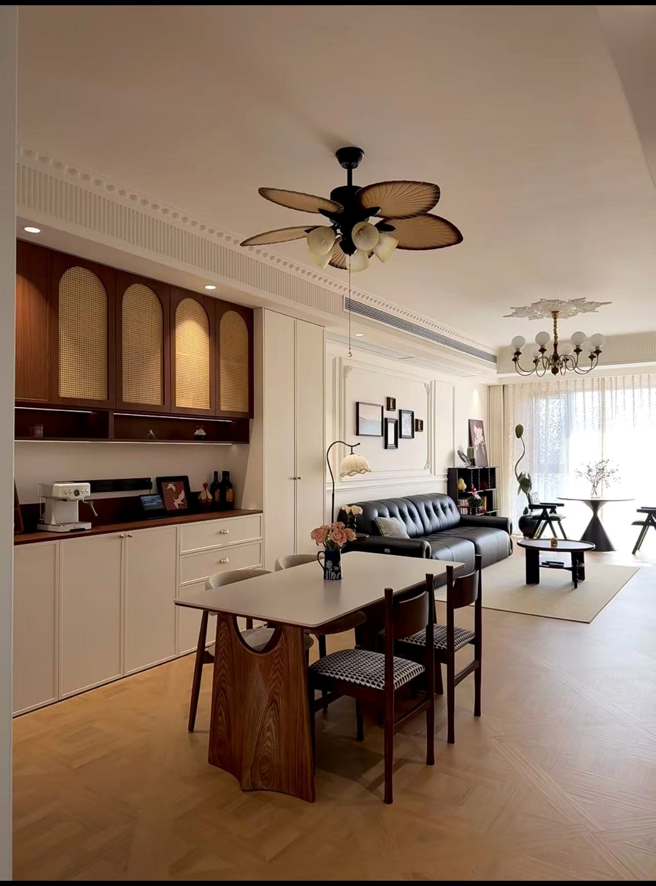
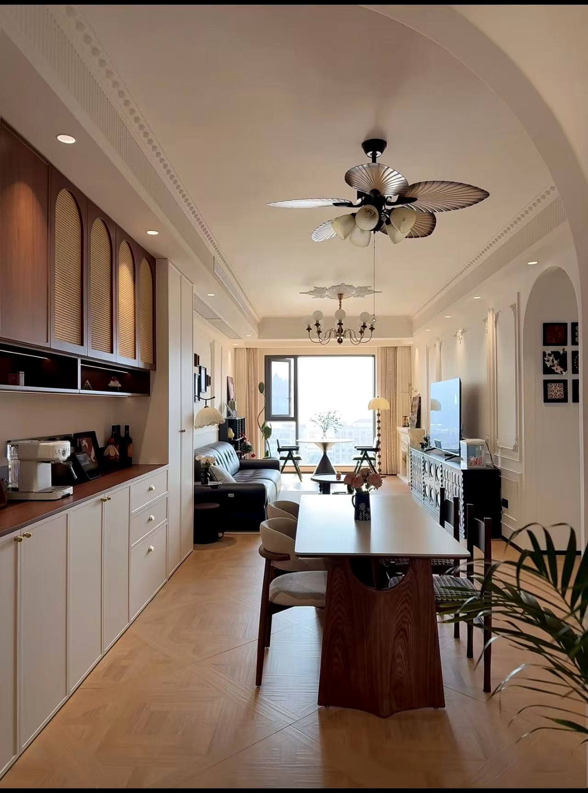
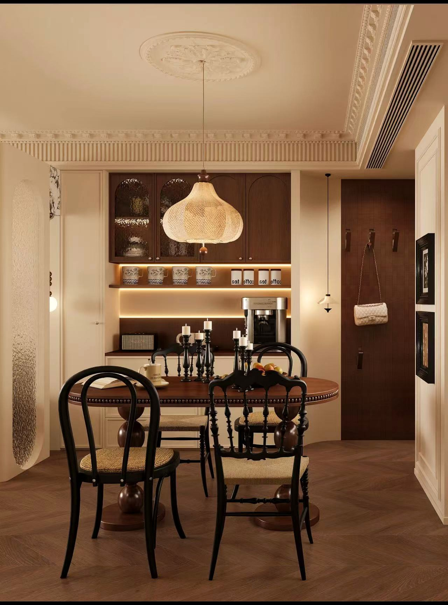
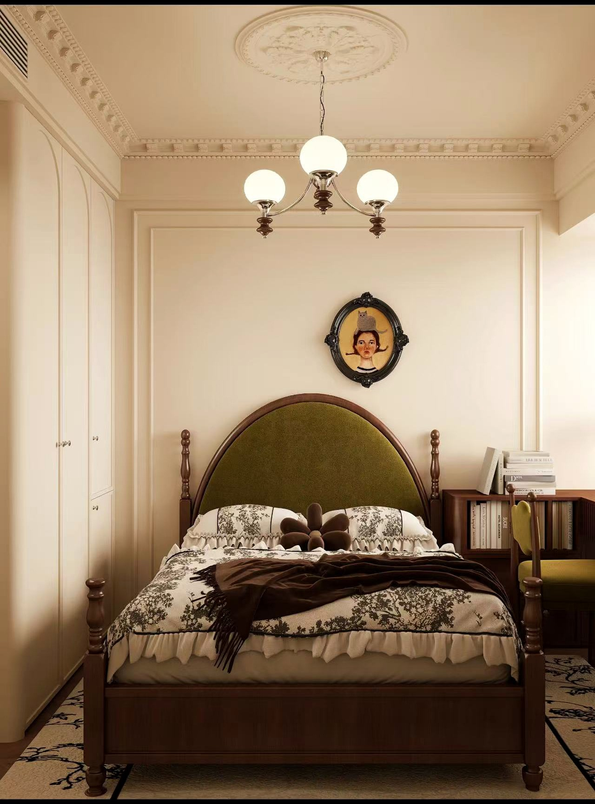

主交付图
客餐厅 · 中古风确认版
V2 · 业主确认版




用于校对户型、墙体、门窗、空间边界。
生成风格、材质、灯光、软装和相机策略。
保留标注、偏好选择和局部重生成任务。
DXF 优先；DWG 需先转 DXF。单位 mm，1:1 绘制。
TXT、PDF、DOCX。用于识别风格、预算、重点空间和规避项。
JPG、PNG、WebP。全景图建议 2:1 比例，用于生成 VR 交付。
选择已经沉淀在本地模型库和资源库中的资产，作为本次方案生成的风格、家具、材质和灯光参考。
记录尺寸、风格、材质和适用空间。
后续支持参数化柜体。
绑定光源类型、色温和亮度。
用于重点空间自动摆放和替换。
中古风、奶油风、现代简约、原木风。
持续补充木地板、乳胶漆、瓷砖、石材、布艺、金属、玻璃。
雏形鸟瞰、客餐厅、厨房、主卧、全景 2:1 视角。
可复用WALL、ROOM-BOUNDARY、ROOM-TEXT、DOOR、WINDOW。
已定义